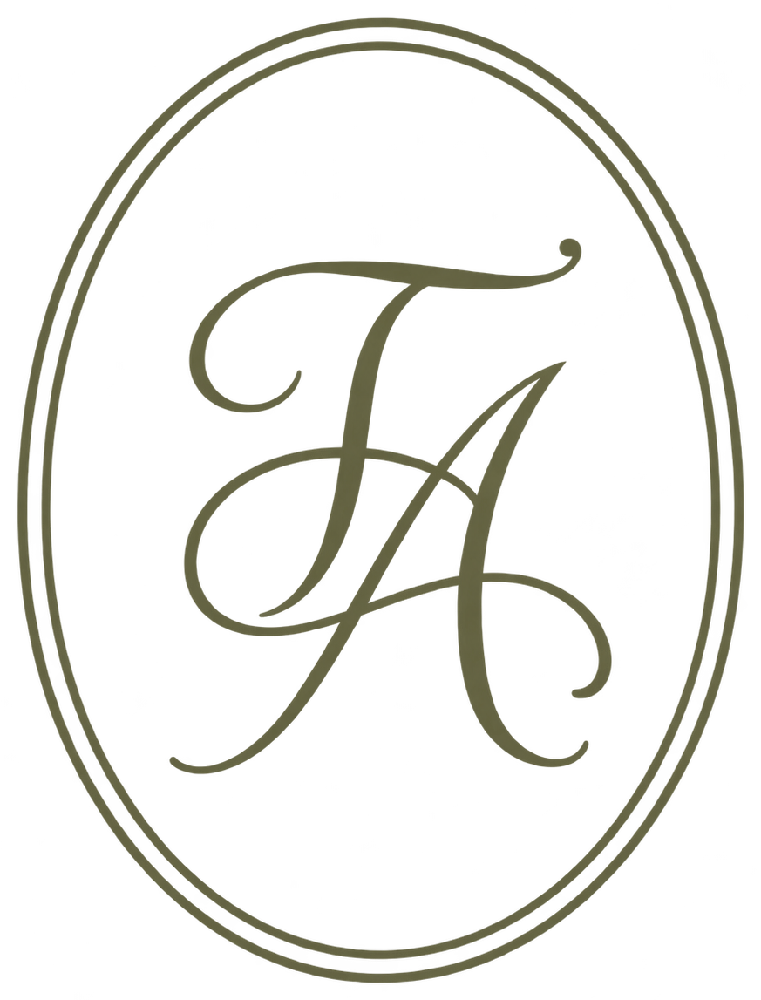
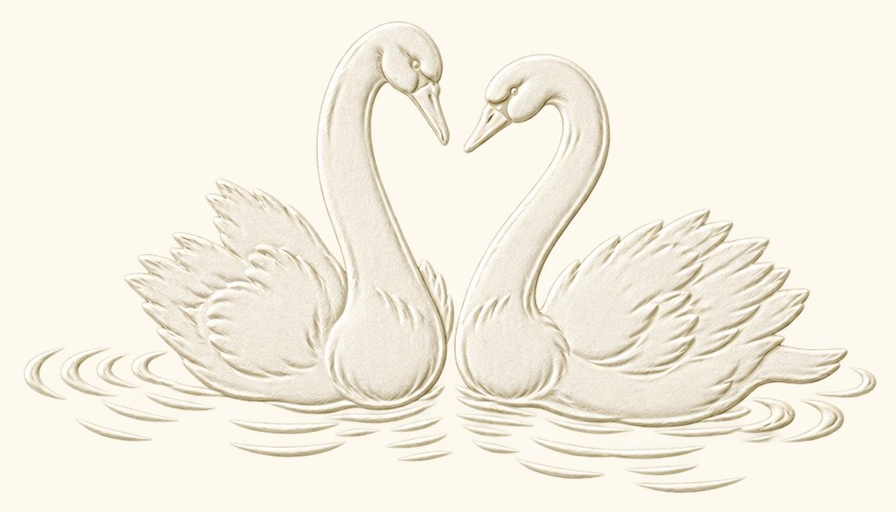
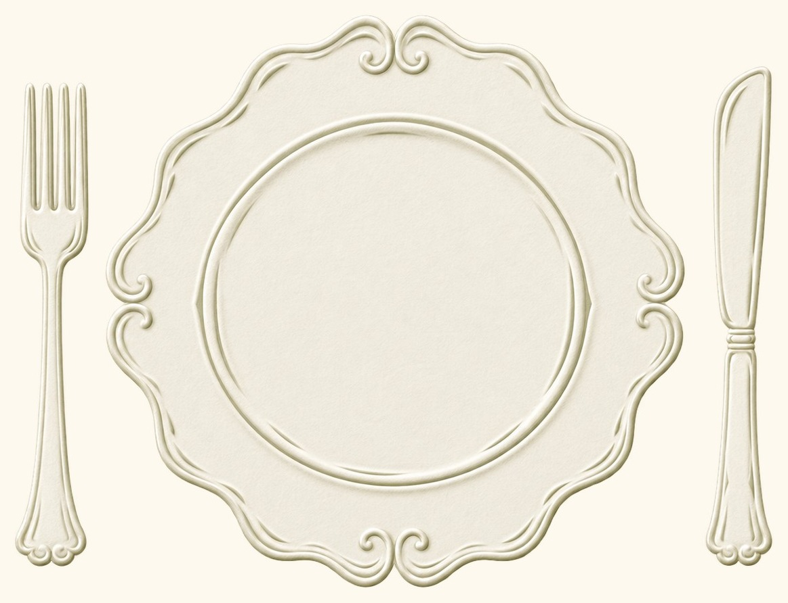

Prispelo je pismo
Tjaše
&
Andraža
Save the
Date
18 · 9 · 2027
Klikni na kuverto
Save
the
Date
18 · 9 · 2027

–
dni
–
ur
–
min
–
sek

Vila Vipolže
Vipolže, Goriška Brda

Vina Rouna
Slap, Vipavska dolina